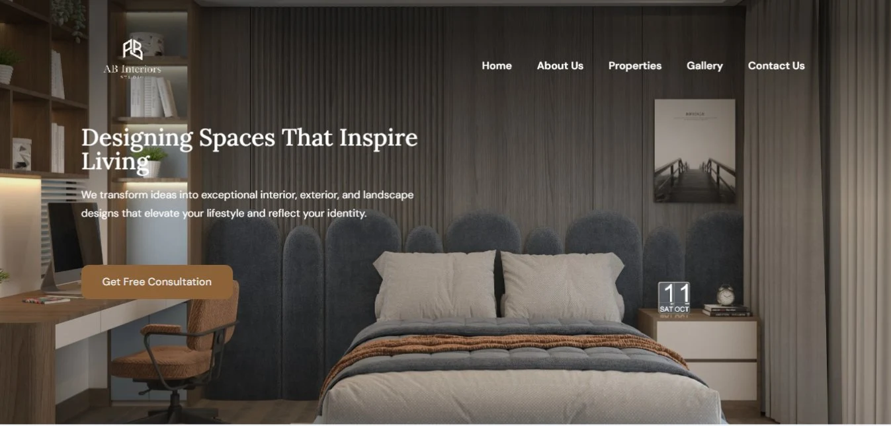
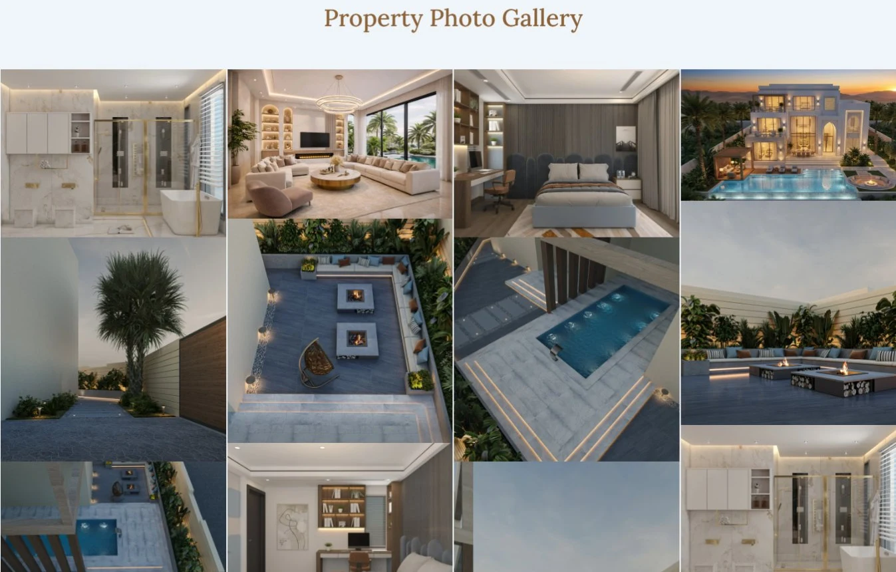
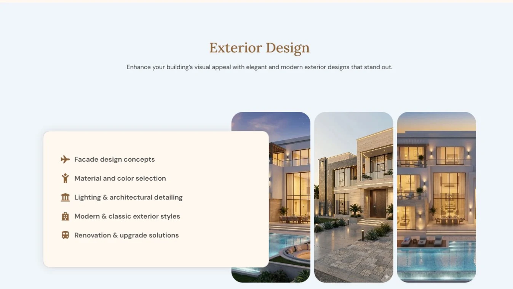
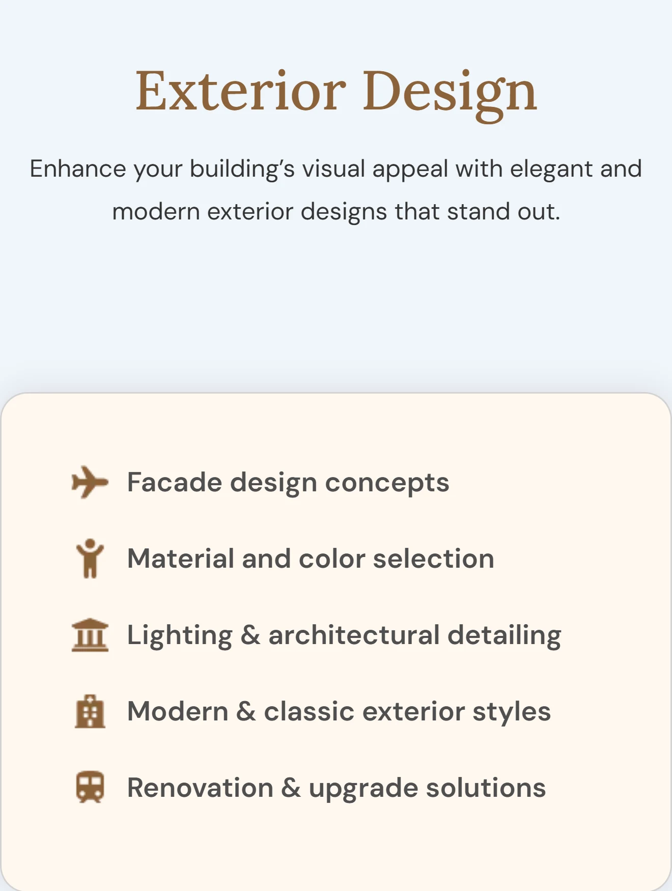
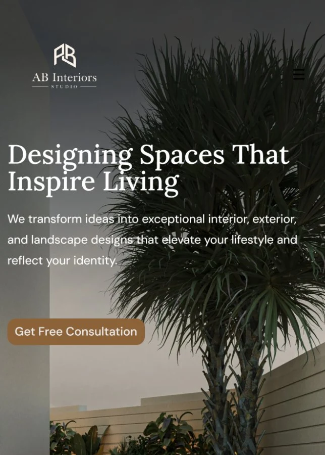

Three design disciplines, one studio, one scroll.
AB Interiors sells interior, exterior, and landscape design as three distinct services, backed by a 50+ photo property gallery and a client video tour — a wider spread of content than a single-service studio site, and an easy way to end up as one long, undifferentiated scroll of renders.
The scope here was the build: turning that content and photography into a working WordPress and Elementor site, solo — including the structural calls the content itself didn't make for me.
Give each service its own identity, without three different page templates.
With three services sharing one homepage, the fastest way to flatten them into sameness would have been one repeated card layout. Instead each service keeps the same photo-strip-plus-offer-card idea but varies which element floats — so the three sections feel related, not identical.
One pattern, three skins
Interior uses a plain checklist, Landscape an overlapping two-tone card, Exterior a floating list card — one idea, three distinct compositions.
Proof before pitch
A hard numbers strip — 250 projects, 180 clients, 10 years, 80 designs — sits right after the studio intro, ahead of any service detail.
Named people, not a form
The closing call-to-action puts both founders' names, titles, direct emails, and phone numbers on screen, instead of routing every enquiry through a generic form.
A warm bronze accent against two different neutrals, not one.
Headings, buttons, and stat numbers all share a single warm bronze, but the backing surfaces alternate between a cool pale blue-grey and a warm ivory cream section by section — so the page breathes between sections instead of reading as one flat block of the same background color.

The palette stays disciplined — one bronze accent, one dark ink, two neutral surfaces, one supporting text grey, and a single secondary blue reserved for the newsletter action — so three different service sections can share it without any one needing its own color story.
EN Heading
Playfair Display
EN Body
Poppins
Colors and type sampled directly from the live site — no source files were provided for this project.
A floating card becomes a stacked block.
On desktop, Exterior Design's info card floats on the left, overlapping the first photo in the three-image strip — a layered, magazine-style composition. On mobile, the same card moves above the photos entirely, full width, with no overlap at all — a deliberately simpler composition for the space, not a shrunk copy of the desktop layout. The same rebuild happens in Landscape Design, where a two-tone overlapping card becomes a plain stacked block below the images.


Built solo in WordPress and Elementor, from render photography to a 50+ image gallery.
I handled the full build: structuring the three service sections as reusable Elementor patterns, laying out the masonry-style Property Photo Gallery from the client's architectural renders, and wiring the stats, testimonials, and newsletter sections against a consistent theme.

A few calls that read as intentional, not default.
Looking back at it with a UX eye, three decisions do more work than they look like they do:
A different hero photo per device
Not a crop of the same image — desktop opens on an interior bedroom shot, mobile opens on an exterior patio shot, two deliberately different first impressions for the same headline and CTA.
Real renders, not stock photography
Every service section and the full property gallery uses the client's own architectural renders, so the gallery doubles as proof of the design work itself.
People, not a ticket queue
Both founders' names, titles, direct emails, and phone numbers sit in the closing call-to-action, ahead of the testimonials — a studio putting its name behind the result.
The gallery stays a highlight reel, not the whole catalogue.
The Property Photo Gallery is a curated set of renders in a single masonry grid rather than a paginated catalogue — enough to prove range across interior, exterior, and landscape work without turning the homepage into an image library a visitor has to dig through.
Three services, one studio, read at a glance.
Whichever service a visitor came for, the same bronze-on-neutral palette, the same photo-strip pattern, and the same stat strip carry through — one studio identity holding together three different kinds of design work.